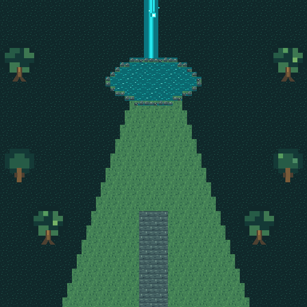

Colorimétrie de luminoussspring.png, modules et couches séparés. La grille de collision et les animations suivent la logique observée dans Halcyon.
luminoussspring.png

100 ms/frame · ancre fixe 16,31 · pas de frame dupliquée.
16,31